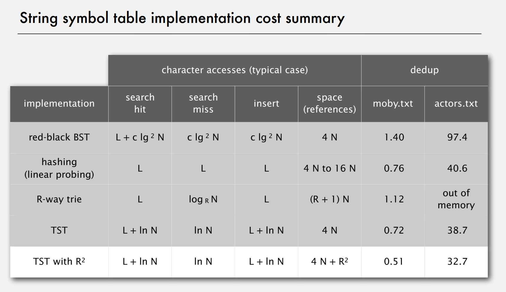

Algorithms II
- Maximum Flow and Minimum Cut
- Flow Network
- Cut, Cut-Set, \(s\)-\(t\) Cut, Capacity of a Cut
- Mincut Problem
- Maxflow Problem
- Ford-Fulkerson Algorithm
- Flow Cut Relationship
- Augmenting Path Theorem
- Maxflow-Mincut Theorem
- Proofs
- Application: Bipartite Matching
- Application: Baseball Elimination
- Radix Sorts
- Key-Indexed Counting
- LSD Radix Sort
- MSD Radix Sort
- 3-way Radix Quicksort (Multi-key quicksort)
- Suffix Sort
- Manber-Myers Algorithm
- Tries
- R-way Trie
- Ternary Search Trie (TST)
- TST with R² Branching at the Root
- Radix tree
- Suffix Tree
- Trie-based Character Operations
- Substring Search
- Regular Expressions
- Data Compression
- Other Notes
Maximum Flow and Minimum Cut
Flow Network
A flow network is a directed graph where each edge has an associated capacity and flow value and the flow is always less or equal to the capacity. Furthermore (apart from source and sink node), the total flow coming out of a node has to be equal to the total flow going into the node.The assignment of flow values to edges is called an s-t flow. The value of an s-t flow is the inflow at the sink (or the outflow at the source).
Cut, Cut-Set, \(s\)-\(t\) Cut, Capacity of a Cut
A cut is a partition of the vertices of a graph into two disjoint subsets A and B. The cut-set is the set of edges that have an endpoint in each of the subsets.An s-t cut is a partition of a network into two disjoint subsets where the source \(s\) is in one subset and the sink \(t\) is in the other. The cut-set of an s-t cut only contains the edges going from the source's subset of the sink's subset. The capacity of an s-t cut is the sum of the weight of each edge in the cut-set.
Mincut Problem
Given a flow network, a source vertex \(s\) and a target vertex \(t\) find the s-t cut with minimal capacity.Maxflow Problem
Given a flow network, find an s-t flow of maximum value.- There are many algorithms to solve maxflow problems
- Best in-practice: push-relabel method with gab relabeling (in \(E^{3/2}\))
- Worst-case time complexity is generally not useful for predicting or comparing maxflow algorithm performance in practice
Ford-Fulkerson Algorithm
- Start with 0 flow at all edges
- Repeatedly find an "augmenting" undirected path from \(s\) to \(t\) such that the flow on forward edges is less than the capacity and the flow on backwards edges is more than 0.
- Increase/decrease the flow along the path on all forward/backward edges.
- Terminate when no augmenting paths are left.
The performance of this algorithm depends heavily on the augmenting path selection algorithm.
Note that the method of finding augmenting paths is not specified in the Ford-Fulkerson algorithm. When BFS is used the algorithm is referred to as the Edmonds–Karp algorithm.
With a bad augmenting path selection algorithm (e.g. longest path first), Ford-Fulkerson can pretty slow (e.g. 200 vs 2 iterations, where each iteration +1/+100 is added to the flow)
Flow Cut Relationship
The net flow across a cut (A, B) is the sum of flows on edges from A to B minus the total flow in the other direction.Flow-value lemma: Let \(f\) be any s-t flow. Then the net flow across any s-t cut is equal to the value of \(f\). (Proof by induction)
Weak duality: The value of any s-t flow is less or equal to the capacity of any s-t cut.
So overall we know that \(\text{value of the flow} = \text{net flow across cut} \le \text{capacity of the cut}\).
Augmenting Path Theorem
A flow \(f\) is a maxflow \(\iff\) there are no augmenting paths (correctness of the ford-fulkerson algorithm)Maxflow-Mincut Theorem
We know that the value of a flow is less or equal to the capacity of any cut. The maxflow-mincut theorem says that equality holds if the chosen flow is the maxflow and the chosen cut is the mincut:Value of the maxflow \(=\) capacity of the mincut
Proofs
To prove the above two theorems show that the following three conditions are equivalent for any flow \(f\):- There exists a cut whose capacity equals the value of the flow \(f\).
- \(f\) is a maxflow.
- There is no augmenting path with respect to \(f\).
Prove 1 \(\implies\) 2, ~3 \(\implies\) ~2 and 3 \(\implies\) 2.
How to compute a mincut from a maxflow follows directly from the proof.
Application: Bipartite Matching
Given a bipartite graph, either find a perfect matching or explain why no perfect matching exists (e.g. matching students to companies). This problem can be reformulated as a maxflow problem as below. If no perfect matching exists the associated mincut explains why.With a Ford-Fulkerson implementation specifically optimized for bipartite matching the runtime is proportional to \(E\sqrt{V}\).
Application: Baseball Elimination
Radix Sorts

Key-Indexed Counting
Key-Indexed Counting is a variant of Counting Sort that allows for stable sorting of Value(arbitrary)-Key(integer) pairs (not just a list of integer values as in counting sort). The radix is the largest key in the array to be sorted an corresponds to the length of the count/cumulatives array.LSD Radix Sort
Going from the rightmost to the leftmost character column in the array to be sorted, LSD radix sort (for fixed width strings) iteratively applies key-indexed counting to the array, taking each character column as the sorting key.LSD radix sort can be used to efficiently sort a list of integers by grouping the number into bytes (or \(n\)-bit sized blocks) and sorting the string of bytes (or string of blocks).
LSD radix sort runs in \(\mathcal{O}(2\cdot nw)\) where \(n\) is the number of keys and \(w\) is the key length.
MSD Radix Sort
MSD Radix sort first applies key-indexed counting to the array taking the leftmost character column as keys. This partitions the array into \(R\) subsets each containing strings starting with the same character. Then MSD radix sort is performed recursively on this subset.Issue with Radix Sort: Radix sorts have a performance issue in cases where the array to be sorted is small but the radix is very large. In this case the sorting of the small array would be possible in a short amount of time but radix sort has to initialize a very large count array. This is especially bad in MSD radix sort where the recursive procedure causes this exact situation to happen many times (in the leaves of the recursion tree sorting arrays are small but the radix remains constant). Solution: Cutoff to insertion sort (starting at the \(d\)th character) for small subarrays. This can be implemented by overriding
less().MSD radix sort is generally linear \(\mathcal{O}(2\cdot nw)\) but can be sublinear \(\mathcal{O}(n \log_R n)\) in input size since for (almost) random keys only very few digits need to be examined to determine the correct order.
Note: LSD radix sort is generally only defined for fixed length keys whereas MSD radix sort can operate on mixed length keys.
3-way Radix Quicksort (Multi-key quicksort)
Disadvantages of MSD radix sort- Accesses memory randomly (→ cache inefficient)
- Needs lots of extra space for count[] and aux[]
- Inner loop with lot of instructions
Disadvantages quicksort
- Linearithmic number of string compares
- Has to rescan many characters in keys with long prefix matches (since comparison with the pivot is done by comparing the entire strings)
3-way string/radix quicksort combines radix sort with quicksort to create a sorting algorithm with quicksort like performance characteristics that performs better than quicksort in cases where lots of keys share prefixes (as is common in many applications of sorting).
Advantages 3-way string quicksort
- Short inner loop
- Cache friendly
- In place
3-way string quicksort partitions the array on the \(d\)th character based on a selected pivot character (median/random/..) such that the first/second/third partition contains keys where the \(d\)th characters is less than/equal/greater than the pivot character. Then the algorithm is recursively applied to the partitions.
3-way radix quicksort benefits from typical quicksort optimizations like median-of-three pivoting and switching to insertion sort for small arrays. 3-way radix quicksort is isomorphic to ternary search trees in the same way that quicksort is isomophic to binary search trees. [1]
Suffix Sort
Suffix sort is a technique that can be used to efficiently search a long string for occurrences of substring (and its context in the string) or to solve the longest repeating substring problem. The longest repeating substring problem has many applications in bioinformatics, cryptanalysis and data compression.First an array of all suffixes of the string is created (in linear time and space using array views) then this array is sorted with any sorting algorithm (e.g. very efficiently with 3-way radix quicksort).
When doing suffix sort with 3-way radix quicksort the worst-case input contains a very long longest repeated substring which causes the algorithm to have a runtime quadratic (or worse) in D. The suffix sort problem can also be solved in linearithmic time with the Manber-Myers algorithm or in linear time with suffix trees.
Manber-Myers Algorithm
The Manber-Myers algorithm is a \(n\log n\) algorithm for creating suffix arrays. In the first phase it sorts the given array on the first character using key-indexed counting. It then repeatedly turns an array sorted on the first \(2^{i-1}\) characters into an array sorted on the first \(2^i\) characters.Tries
Both red-black BSTs and hash tables are efficient symbol table implementations. We can do even better however by avoiding examining entire keys and look at individual characters.
R-way Trie
An R-way trie is a data structure that associates arbitrary values with string keys in a way that allows for efficient search, insert and delete operations.Ternary Search Trie (TST)
A hybrid between search trees and tries that is more space efficient than regular tries.We can build balanced TSTs via rotations to achieve a \(L + \log N\) worst-case guarantee.
TST with R² Branching at the Root
This is a hybrid between regular tries and TSTs which performs better than either. At the root there exist either \(R\) or \(R^2\) branches that cover the first (or first two) characters, then the rest of the trie is a normal TST.Radix tree
Radix trees (also called compact prefix tree; variant of patricia trie) removes one-way branches by compressing multiple character nodes into a single string node.Suffix Tree
A suffix tree is a patricia trie of suffixes of a string and can be constructed in linear time. Can solve longest repeated substring, longest common substring, longest palindromic substring, substring search, tandem repeats,.. in linear time.Trie-based Character Operations
- Prefix match (find all keys that match a given prefix)
- Wildcard match (find all keys that match a given pattern)
- Longest prefix (find key that is the longest prefix of a given word, e.g. ip packet routing)
- Sorted iteration (inorder traversal of trie yields keys in sorted order)
Substring Search
Brute-force approach
Go through pattern and text input at the same time always checking that characters match. If a mismatch occurs backtrack to beginning of pattern+1 and try again.Knuth-Morris-Pratt Substring Search
The Knuth-Morris-Pratt algorithm precomputes an NFA (deterministic finite state automaton) that allows us to always know our matched-up-to-\(d\)th-char position in the pattern without ever having to backtrack. The computing the NFA table is \(\mathcal{O}(k)\) where \(k\) is the length of the pattern and performing the substring search is \(\mathcal{O}(n)\) where \(n\) is the length of the string, so the KMP algorithm is \(\mathcal{O}(k+n)\). (Note in the course a less efficient but much simpler method for computing a DFA is presented that takes more space and time to compute)Boyer-Moore Heuristic
We can achieve sublinear time for substring search by comparing patterns from right to left, skipping over part of the pattern if a letter doesn't match.- If character is not in pattern: skip over entire pattern
- Otherwise skip to the rightmost matching character. Unless this would involve back-up of the leftmost edge of the pattern, then just move one character over.
Step 2. can be performed efficiently by precomputing a table of rightmost character occurrences.
Substring search with the Boyer-Moore mismatched character heuristic takes about \(N/M\) character compares where \(N\) is the length of the string and \(M\) is the length of the pattern.
The worst-case of \(M\cdot N\) can be avoided by using a KMP (see above) hybrid rule to guard against repetitive patterns which brings the worst case runtime to \(3N\).
Rabin-Karp Algorithm
The Rabin-Karp algorithm is another efficient algorithm for substring search based on modular hashing. Rabin-Karp can be extended to cases with 2d-patterns or multiple patterns.Above, \(Q=997\) is chosen as an arbitrary, large prime number. If the hash of the current substring matches the hash of the pattern the strings can be compared to see whether they actually match.
The hash computation can also be performed efficiently. Basically we have to evaluate the polynomial $$ x_i = t_iR^{M-1} + t_{i+1}R^{M-2} + \ldots + t_{i+M-1}R^{0} $$ for every starting position \(i\) and hash the result. To compute the hash of a single substring/pattern we can use Horner's method and apply the hash function between each step which ensures that the values can't grow arbitrarily large, no matter how long the pattern is.
We can then efficiently compute the hashes for sequential substrings in a running fashion (applying the hash function after each step): $$ x_{i+1} = (x_i - t_iR^{M-1}) R + t_{i+M} $$ Note that \(R^{M-1} \pmod{Q}\) can be precomputed (using Horner's method to prevent overflows).
Monte Carlo version: Return match if hashes match, always runs in linear time but may be incorrect with a small probability.
Las Vegas version: If hashes match check for string match and return result, always correct and likely to run in linear time (but worst case \(MN\)).
Note that arithmetic ops in Rabin-Karp are generally slower than char compares.
If \(Q\) is a sufficiently large random prime (about \(MN^2\)), then the probability of a false collision is a about \(1/N\). In practice choose \(Q\) to be a large random prime, under reasonable assumptions the probability of a collision is about \(1/Q\).
Regular Expressions
A regular expression is a notation consisting of concatenation, or, closure (Kleene's star) and parentheses used to specify a possibly infinite set of strings.Other common regex patterns like "[a-z]", "a+", "." (wildcard), "[0-9]{5}" (exactly k), ... can all be expressed through the notational devices listed above. Notations like "\0" (matches previous match) are not regular.
General regex Pattern Matching
Kleene's Theorem: For any DFA, there exists a RE that describes the same set of strings and vice versa. The corresponding DFA may however have an exponential number of states.Instead of DFAs we use NFAs in the following algorithm since we can't process an exponential number of states in polynomial time.
Pattern matching algorithm overview
- Create NFA from RE
- Simulate NFA with text as input
- If the NFA ends in a terminal state the text matches the pattern.
Constructing the NFA
The NFA can be constructed in time proportional to \(M\), where \(M\) is the length of the RE with the following procedure:
- We are using states numbered from \(0\) to \(M\), one for each symbol in the RE + one terminal state.
- Every in-alphabet symbol (A, B,..) has an edge to the next state. (implicitly stored in the RE array)
- Create separate directed graph to store \(\epsilon\)-transitions (red edges in the picture below) in. There are simple rules to determine which \(\epsilon\)-edges are needed for each type of metacharacter.
Note: to create the \(\epsilon\)-transition digraph, maintain a stack that stores opening and closing parentheses and \(|\) (or) symbols.
Simulating the NFA
- Maintain a set of all possible states that the NFA could be in after reading the first \(i\) characters.
- Read character \(i+1\) and update set of possible states after transitioning.
- Add all states reachable via \(\epsilon\) transitions by running dfs on the \(\epsilon\)-digraph starting from all possible current states.
- Repeat for all characters in the input.
Data Compression
Universal Data Compression
Proposition: No algorithm can compress every bitstring. Proof by counting number of bitstrings with \(n\) bits vs number of bitstrings with \(\le n-1\) bits. (or proof by contradiction through repeated application of the algorithm)Other Notes
- Eulerian tour is tractable; graph isomophism, hamilton cycle are intractable
- Find topological sort with reverse dfs postorder
- Shortest path: topological sort (restriction: no directed cycles), dijkstra (restriction: no negative edges), bellman-ford (restriction: no negative cycles)
- We can also use bellman ford to detect and find negative cycles (e.g. for arbitrage)